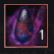
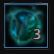
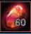
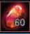
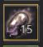
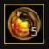
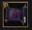
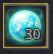

Important Items and What They Do.
I listed some of the important items that you may acquire as you progress. This will be like a small dictionary to save you the time. If I miss any please feel free to message me on discord.
Enhancement
1.  Black Stone Armor. This is one of the loot you get from killing mobs. It is use to enhance any armor from +1 to +15. It is also use for failstacking.
Black Stone Armor. This is one of the loot you get from killing mobs. It is use to enhance any armor from +1 to +15. It is also use for failstacking.
2.  Black Stone Weapon. This is one of the loot you get from killing mobs. It is use to enhance any weapon from +1 to +15. It is also use for failstacking.
3.  Hard Black Crystal Shard. This is one of the loot you get from gathering. You need to heat this together with black stone armor to turn it into "concentrated magical black stone armor"  . It is use to enhance any armor from +15 to PEN.
. It is use to enhance any armor from +15 to PEN.
4.  Sharp Black Crystal Shard. This is one of the loot you get from gathering. You need to heat this together with black stone weap to turn it into "concentrated magical black stone armor"  . It is use to enhance any weapon from +15 to PEN.
Sharp Black Crystal Shard. This is one of the loot you get from gathering. You need to heat this together with black stone weap to turn it into "concentrated magical black stone armor"  . It is use to enhance any weapon from +15 to PEN.
5. Cleansed Magical Black Stone. This is one of the loot you get world bosses. It is use for a guaranteed enhancement starting from +13 of any blue rarity weapon and armor. (NOTE: You need a certain amount of this stone for +13,+14,+15.)
6.  Stabilized Magical Black Stone. This is one of the loot you get world bosses. It is use for a guaranteed enhancement starting from +13 of any green rarity weapon and armor. (NOTE: You need a certain amount of this stone for +13,+14,+15.)
Stabilized Magical Black Stone. This is one of the loot you get world bosses. It is use for a guaranteed enhancement starting from +13 of any green rarity weapon and armor. (NOTE: You need a certain amount of this stone for +13,+14,+15.)
7.  Pure Magical Black Stone. This is one of the loot you get world bosses. It is use for a guaranteed enhancement starting from +13 of any yellow rarity weapon and armor. (NOTE: You need a certain amount of this stone for +13,+14,+15.)
8. Memory Fragment. This is one of the loot you get as a reward or by summoning a "Pila Fe Scroll". It is use to restore the durability of a yellow rarity weapon and armor.
9.  Valks Cry. This item gives you +1 enhancement failstack but you can only use up to 10 valks cry for +10 fs. (NOTE: I recommend Using it only when you have 40+ fs or above.)
10.  Advice of Valks. This will grant your character instant failstack. If you have +50 Advice of Valks you get 50 fs upon using this item.
11.  Cron Stone. Once you enhance your gear up to DUO it is now possible for that gear to downgrade upon failing. Cron stones prevent gears from downgrading.


 Sealed Book of Life. This is one of the rewards you get from daily loggin and events rewards (7 day Version) or you can buy this from the Pearl Shop (15 day Version). It gives you Life skill EXP 50% for 24 hours and you can use this over and over until it expires.
Sealed Book of Life. This is one of the rewards you get from daily loggin and events rewards (7 day Version) or you can buy this from the Pearl Shop (15 day Version). It gives you Life skill EXP 50% for 24 hours and you can use this over and over until it expires. Blessing of Kamasylve. This is one of the rewards you get from daily loggin, dice, events rewards (1 day, 7 day Version) or you can buy this from the Pearl Shop (15 day Version). It gives you +2 energy and item drop rate +20%. (NOTE: This is a must buy if you're planning to be a life skiller.)
Blessing of Kamasylve. This is one of the rewards you get from daily loggin, dice, events rewards (1 day, 7 day Version) or you can buy this from the Pearl Shop (15 day Version). It gives you +2 energy and item drop rate +20%. (NOTE: This is a must buy if you're planning to be a life skiller.)